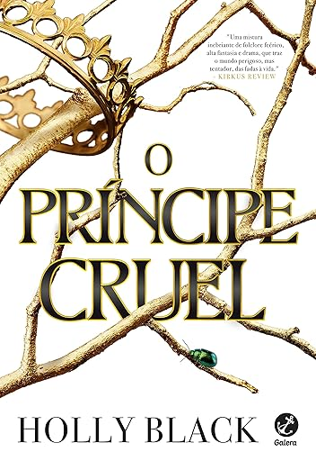

Jude tinha 7 anos quando seus pais foram assassinados e foi forçada a viver no Reino das Fadas. Dez anos depois, tudo o que ela quer é ser como eles – lindos e imortais – e realmente pertencer ao Reino das Fadas, apesar de sua mortalidade. Mas muitos do povo das Fadas desprezam os humanos. Especialmente o Príncipe Cardan, o filho mais jovem, mais bonito e mais cruel do Grande Rei. Para ganhar um lugar na Alta Corte, ela deve desafiá-lo… e enfrentar as consequências. Envolvida em intrigas e traições do palácio, Jude descobre sua própria capacidade para truques e derramamento de sangue. Mas, com a ameaça de uma guerra civil e o Reino das Fadas por um fio, Jude precisará arriscar sua vida em uma perigosa aliança para salvar suas irmãs, e o próprio Reino. Com personagens únicos, reviravoltas inesperadas, e uma traição de tirar o fôlego, este livro vai deixar o leitor querendo mergulhar de cabeça na continuação deste universo.
Holly Black é a autora best-seller número 1 do New York Times em livros de fantasia, incluindo a série "Elfhame", " A Garota Mais Fria de Coldtown" , as "Crônicas de Spiderwick" , seu primeiro livro para adultos, " O Livro da Noite" , além de um livro ilustrado arturiano chamado "Sir Morien" . Ela foi finalista do Prêmio Eisner e do Prêmio Lodestar, e recebeu o Prêmio Mythopoeic, o Prêmio Nebula e uma Menção Honrosa Newbery. Seus livros foram traduzidos para 32 idiomas em todo o mundo e adaptados para o cinema. Atualmente, ela mora na Nova Inglaterra com o marido e o filho em uma casa com uma biblioteca secreta.